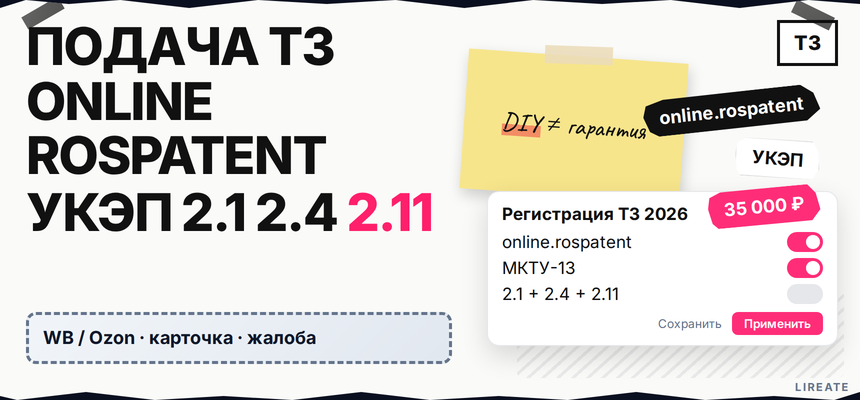
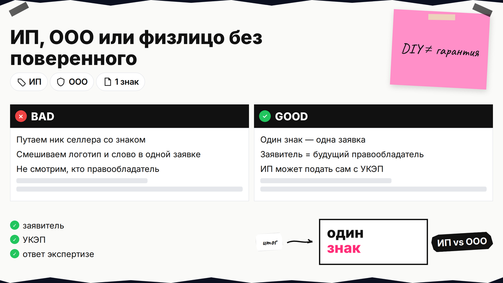
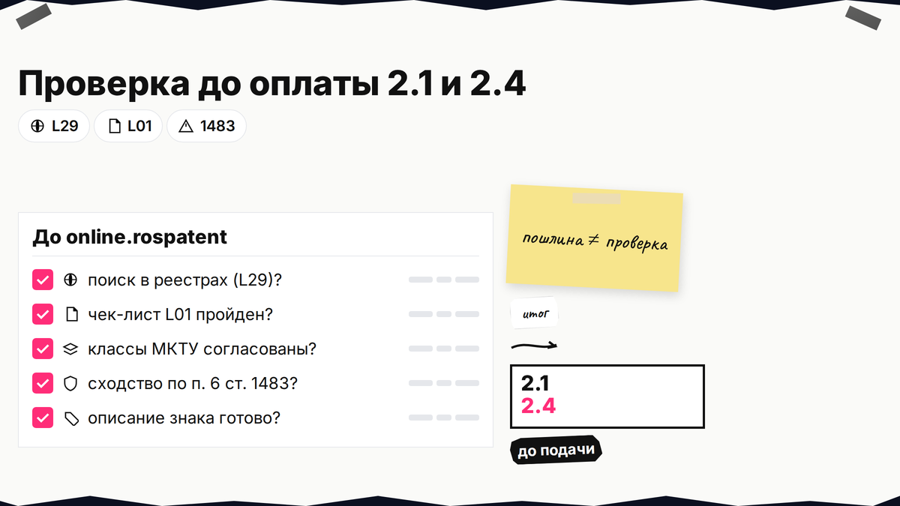
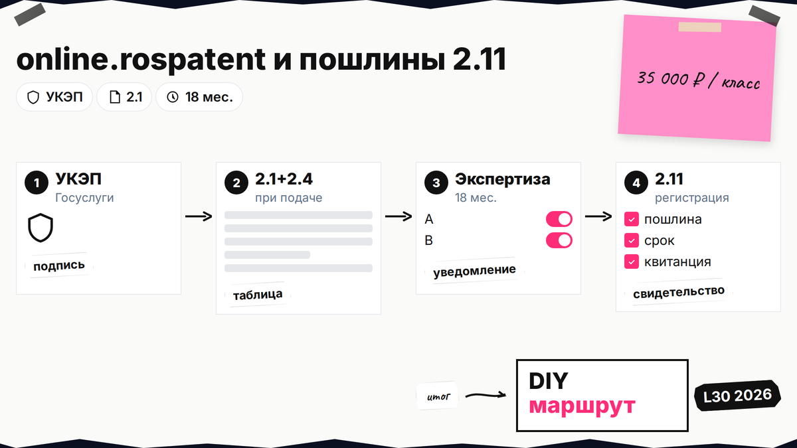

Запрос "как зарегистрировать товарный знак" в 2026 году - это не одна форма, а цепочка: проверка в реестрах, классы МКТУ-13, заявка через online.rospatent или Госуслуги с УКЭП, три платежа по таблице Роспатента и две экспертизы. Ниже вы пройдёте маршрут с бюджетом 35 000 ₽ за один класс (пп. 2.1 + 2.4 + 2.11), сроком около 18 месяцев и 2 недель и ссылками на ответ экспертизе при отказе и план, если знак занят, если экспертиза задаст вопросы - без гарантии регистрации.

TL;DR / Быстрый инсайт: Самостоятельная регистрация = проверка на Поисковой платформе (подробнее проверка в реестрах Роспатента и ФИПС и чек-лист перед подачей) → классы МКТУ-13–2026 (как определить класс МКТУ) → заявка на online.rospatent.gov.ru или Госуслуги с УКЭП → при подаче пошлины 2.1 + 2.4 (полный цикл по таблице: 35 000 ₽ за 1 класс, пп. 2.1 + 2.4 + 2.11, до 10 позиций в перечне) → формальная экспертиза (до 1 мес.) и по существу (до 12 мес.) → после решения о регистрации 2.11 (18 000 ₽) → свидетельство на 10 лет. Общий срок услуги по карточке госуслуги: 18 месяцев и 2 недели, с возможным удлинением при уведомлениях.
Инструкция для ИП, ООО и физлица без патентного поверенного. Пошлины и сроки сверены с таблицей Роспатента на 04.11.2026; это не индивидуальная юридическая консультация и не гарантия регистрации.

Заявку подаёт юрлицо или гражданин, включая ИП и, с 193-ФЗ, физлицо без ИП (ст. 1492). Одна заявка = один знак; название и логотип отдельно - две заявки (п. 2). Запрос «запатентовать бренд» в быту — про товарный знак, а не патент на слово.
Делайте: совпадение заявителя с тем, кто реально использует бренд в договорах и на маркетплейсах. Не делайте: подавать от физлица, если бренд принадлежит ООО по договору с дизайнером без переуступки прав.

Начните с Поисковой платформы; маршрут по реестрам - гайд по проверке на сайтах Роспатента и ФИПС, риски - чек-лист по открытым реестрам. Сходство с ранним знаком в однородных классах - основание отказа по п. 6 ст. 1483; пустой поиск не гарантирует регистрацию.
Делайте: сохранить номера найденных свидетельств и заявок. Не делайте: игнорировать занятое название - тактика доработки обозначения в материале о занятом товарном знаке.

Перечень ведут по МКТУ-13–2026 с 01.01.2026 (ФИПС). Классы и формулировки - гайд по классам МКТУ; пример 25+35 для одежды - регистрация бренда одежды.
Делайте: на старте держать не более 10 позиций в каждом классе перечня - сверх 10-ой каждая позиция добавляет 500 ₽ к пошлине 2.4 (таблица). Не делайте: копировать чужой перечень из конкурента без проверки однородности вашего ассортимента.
Комплект по странице госуслуги: заявление, изображение или описание обозначения, перечень по классам МКТУ, согласия правообладателей чужих элементов (если в макете чужой текст или символ). Пошаговую подготовку комплекта см. в инструкции по самостоятельной подготовке заявки на регистрацию товарного знака. УКЭП (усиленная квалифицированная электронная подпись) подтверждает, что заявку отправил именно вы; без неё электронная заявка в кабинет ФИПС не уйдёт в работу.
Подача: online.rospatent.gov.ru с УКЭП, Госуслуги или лично/почтой на Бережковскую наб., 30.
Делайте: электронную подачу через online.rospatent или Госуслуги с УКЭП — ставки пошлин 2.1, 2.4 и 2.11 те же, что в таблице Роспатента. Не делайте: путать платную предоценку ФИПС с экспертизой по заявке и ориентироваться на устаревшие «скидки 30%» за онлайн (отменены с 05.10.2024, ПП РФ № 1278).
Ставки - по подпунктам 2.1, 2.4, 2.11 приложения № 1 к Положению о пошлинах (официальная таблица на rospatent.gov.ru; актуальные суммы продублированы на странице госуслуги, обновление с 04.10.2025).
| Этап | Пункт таблицы | Когда платить | База (1 класс, до 10 позиций в классе) |
|---|---|---|---|
| Регистрация заявки + формальная экспертиза | 2.1 | При подаче | 4 000 ₽ + 1 000 ₽ за каждый класс сверх 1-го |
| Экспертиза по существу | 2.4 | Одновременно с 2.1 при подаче | 13 000 ₽ + 2 500 ₽ за класс сверх 1-го + 500 ₽ за позицию в классе сверх 10 |
| Регистрация ТЗ в реестре | 2.11 | После положительного решения по экспертизе | 18 000 ₽ + 2 000 ₽ за каждый класс сверх 5-го |
| Бумажное свидетельство (если нужно) | 2.14 / блок госуслуги | После регистрации | 3 000 ₽ (на странице услуги указано вместе с этапом выдачи) |
Минимум 1 класс: 35 000 ₽ (4 000 + 13 000 + 18 000, пп. 2.1 + 2.4 + 2.11) при любой подаче; 2 класса: 38 500 ₽ (до 10 позиций в каждом классе, электронное свидетельство; бумажный экземпляр — п. 2.14, 3 000 ₽) — только госпошлины.
Делайте: заложить бюджет до подачи и не смешивать госпошлины с услугами "под ключ" из рекламы. Не делайте: ориентироваться на устаревшие суммы из статей 2023-2024 без сверки с таблицей 2026.
| Критерий | Самостоятельно (DIY) | Сопровождение бюро / Лирейт |
|---|---|---|
| Госпошлины | Платите сами по таблице (35 000 ₽ за класс, пп. 2.1 + 2.4 + 2.11) | Те же пошлины + гонорар за работу |
| Проверка сходства | Реестры и чек-лист проверки на вашей стороне | Поиск и формулировки перечня у специалиста |
| Уведомление Роспатента | Ответ за 6 мес. готовите сами (разбор отказа и ответ экспертизе) | Доводы и переписку ведёт поверенный |
| Риск отказа | Не снимается; пошлины за экспертизу обычно не возвращаются | Тот же исход возможен; задача - снизить ошибки в заявке |
После оплаты 2.1 + 2.4: формальная экспертиза до 1 мес., затем по существу до 12 мес. (госуслуга). Полный цикл услуги - 18 месяцев и 2 недели, с удлинением при уведомлениях; строку "срок" на ЕПГУ сверяйте отдельно, не подменяя регламент.
Маршрут самостоятельной регистрации:
Проверка в реестрах → МКТУ-13 → заявка + УКЭП → 2.1 + 2.4 → экспертизы → 2.11 → свидетельство (10 лет)
Делайте: следить за статусом в кабинете ФИПС. Не делайте: путать регистрацию ТЗ с брендом на маркетплейсе - разбор площадок в гайде по бренду на Ozon и Wildberries, здесь только отсылка после свидетельства.
При риске отказа приходит уведомление; ответ - в течение 6 месяцев (ст. 1499). Тактика и основания - отказ по относительным основаниям и ответ экспертизе; если знак занят ещё до подачи - что делать, если товарный знак занят.
Делайте: не пропускать срок 6 месяцев на ответ. Не делайте: путать уведомление экспертизы с возражением по заявке третьего лица (другие сроки и пошлины).
После решения оплатите 2.11 и при необходимости 3 000 ₽ за бумажное свидетельство; выдача - до 1 мес. после записи в реестре. Охрана - 10 лет (инструкция Роспатента).
Укажите номер свидетельства в договорах и на упаковке в пределах перечня МКТУ. Для маркетплейсов сверьте имя на площадке с зарегистрированным обозначением - алгоритм в гайде по бренду на маркетплейсах (оферты площадок здесь не разбираем). Для одежды смотрите связку классов в материале о регистрации бренда одежды.
Делайте: напоминание о продлении через 10 лет. Не делайте: выходить в новые классы без отдельной заявки.
DIY снижает расходы на бюро, но не отменяет отказ. При комбинированном знаке, нескольких классах или уведомлении подключайте поверенного. На Лирейт - сопровождение регистрации ТЗ без обещания исхода экспертизы.
Материал проверен: эксперт Елена Ковалева (главный эксперт по SEO/GEO), редакция Лирейт.
Достоверность данных: таблица пошлин, карточка госуслуги регистрации ТЗ, МКТУ-13, ст. 1492, 1499, 1483 ГК РФ сверены с официальными источниками на 04.11.2026. Показы Яндекс Wordstat в среде подготовки материала не запрашивались.
Да. ИП подаёт заявку как гражданин; поверенный не обязателен (ст. 1492 ГК РФ). Ответственность за комплект документов и сроки ответов на уведомления остаётся на заявителе.
Минимум: 35 000 ₽ (пп. 2.1 + 2.4 + 2.11) за один класс до 10 позиций; свидетельство электронное, бумажный экземпляр — п. 2.14 (3 000 ₽) — см. таблицу Роспатента.
Оба канала ведут к одной процедуре регистрации; online.rospatent - кабинет ФИПС с УКЭП, Госуслуги - услуга на ЕПГУ. Сверьте актуальный список документов и срок в карточке госуслуги на дату подачи.
В карточке услуги указано 18 месяцев и 2 недели на полный цикл при стандартном ходе; формальная экспертиза - до 1 месяца, по существу - до 12 месяцев. Срок растягивается при уведомлениях и доводах.
Подготовьте ответ с доводами и приложениями и направьте в течение 6 месяцев с даты уведомления. Пошаговый разбор оснований — в материале об ответе экспертизе при отказе; не пропускайте срок.
Если нужна охрана и слова, и рисунка как разных объектов - это две заявки (п. 2 ст. 1492). Комбинированный знак в одной заявке защищает сочетание, а не автоматически каждый элемент отдельно.
Часть пошлин за поданную заявку и проведённую экспертизу, как правило, не возвращается; возврат возможен только в случаях, прямо указанных в законодательстве о пошлинах. Перед подачей заложите риск отказа, пройдите чек-лист проверки и при необходимости план при занятом знаке, а не только сценарий "успех".